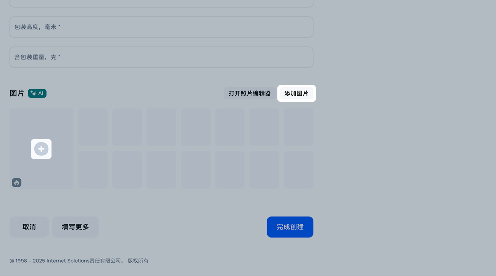
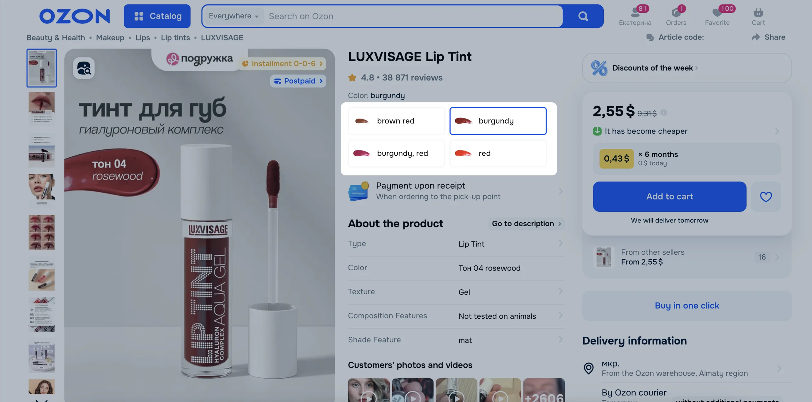
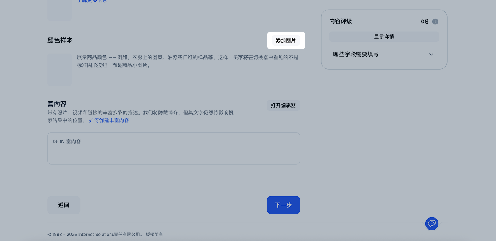
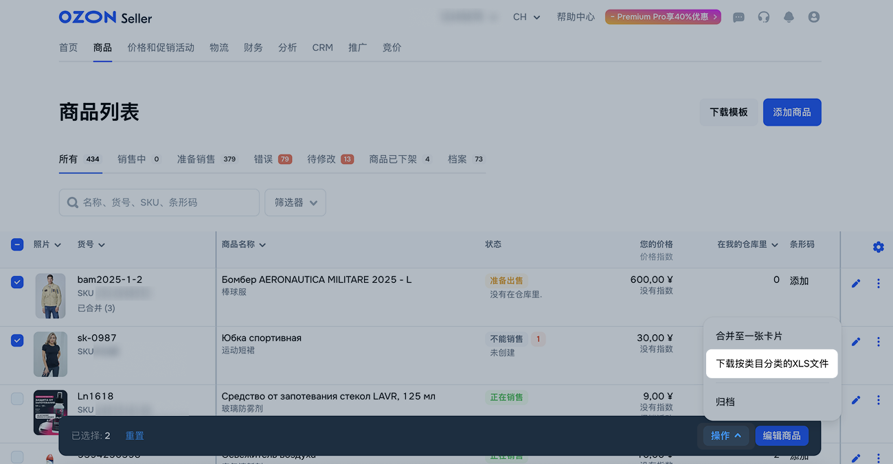
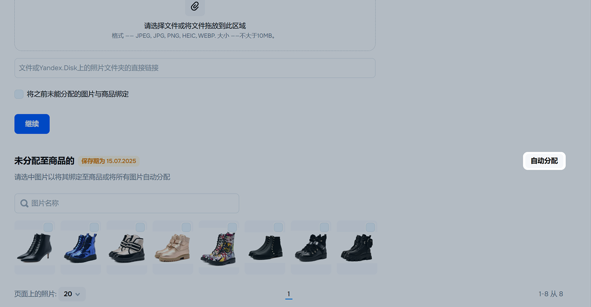
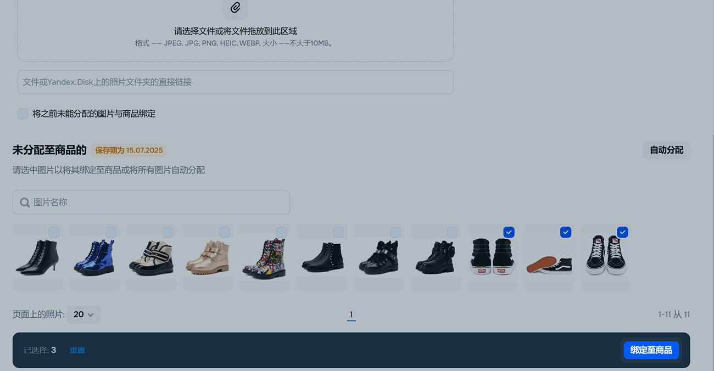
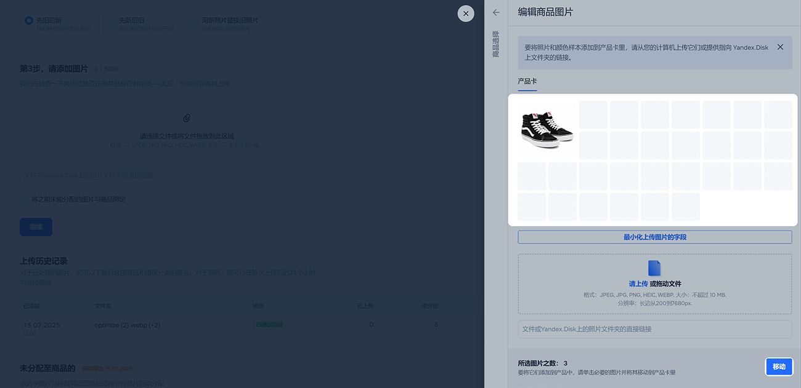
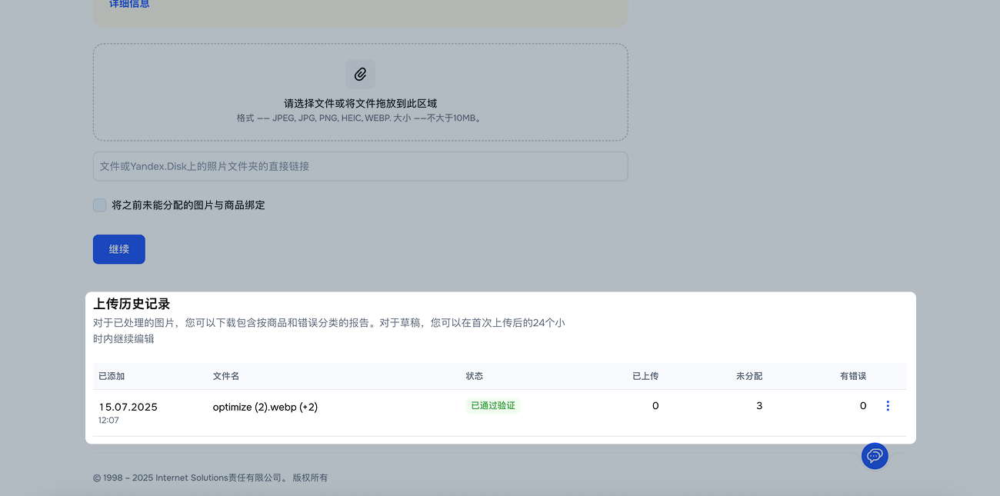
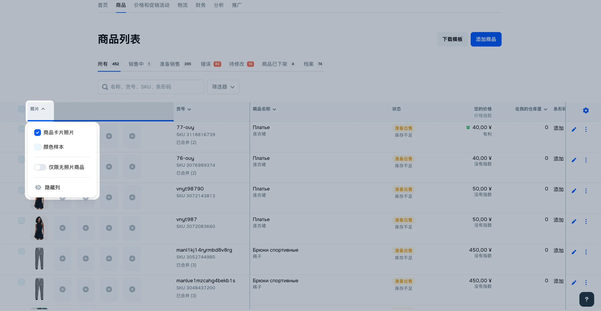

所有图片都将经过审核，因此请保证图片符合 要求 。
如果商品有多种型号选项，您可以将它们 合并至一张卡片 。
通过商品卡片
添加照片
为了让商品开始销售，请添加照片。除了“汽车用品”、“运动与休闲”和“建筑与装修”类目外，其他所有类目都可以先创建商品卡片，然后再上传照片。
在其他类目中，没有图片的卡片将不会被上架销售。您可以在 商品 → 商品列表 → 错误 标签页上查看这些商品。
在 创建商品 页面中填写商品特征，并在页面底部的 图片 模块 点击 添加 图片 或 。

通过任意方式上传图片：
将图片拖拽到上传区域。
点击 并从电脑中选择文件。
提供存放在 Yandex Disk 文件夹中的图片链接。
如何获取图片的直接链接
文件夹中必须仅包含图片。其他类型文件和子文件夹无法识别。若 Yandex Disk 不可用，请选择其他上传方式。
您可以上传不多于30张照片：1张主照片和29张附加照片。如果您上传更多，那么多余的照片将进入 该商品的其它照片 板块。 如果您想把它们加入到卡片中，则需要从卡片中删除一些图片。
若要设置主图，请将其放在图片列表的第一个位置 主图 窗口。 有错误的图片会标记为 。 将鼠标悬停在标记上可查看提示。
建议您预览图片在搜索结果中的展示效果。
若上传的图片比例为 3 : 4，则完全符合要求。买家能完整看到图片且不会遗漏重要细节。
若比例不是 3 : 4，但适用于“8 点拉伸法”，我们会自动将其上下拉伸以适配。
若比例不是 3 : 4 且不适用于“8 点拉伸法”，则图片将上下留白显示。
点击 保存 。填写商品的其他特征。
进入 商品 → 商品列表 ，在商品对应一行 点击 。
进入 媒体 选项卡，在 图片 区块点击 添加图片 。
在 图片 选项卡通过任意方式上传图片：
将图片拖拽到上传区域。
点击 并从电脑中添加文件。
提供存放在 Yandex Disk 文件夹中的图片链接。
如何获取图片的直接链接
文件夹中必须仅包含图片。 其他类型文件和子文件夹无法识别。若 Yandex Disk 不可用，请选择其他上传方式。
您可以上传不多于30张照片：1张主照片和29张附加照片。如果您上传更多，那么多余的照片将进入 该商品的其它照片 板块。 如果您想把它们加入到卡片中，则需要从卡片中删除一些图片。
若要设置主图，请将其放在图片列表的第一个位置 主图 窗口。 有错误的图片会标记为 。 将鼠标悬停在标记上可查看提示。
建议您预览图片在搜索结果中的展示效果。
若上传的图片比例为 3 : 4，则完全符合要求。买家能完整看到图片且不会遗漏重要细节。
若比例不是 3 : 4，但适用于“8 点拉伸法”，我们会自动将其上下拉伸以适配。
若比例不是 3 : 4 且不适用于“8 点拉伸法”，则图片将上下留白显示。
点击 保存 。
如果商品卡片一切正常，商品将显示在 商品 → 商品列表 → 可售商品 模块中。 有错误的商品可在 错误 和 待修改 选项卡中找到。
您可以在商品卡片中添加一张包含尺码表的图片，替代通过 构建器 创建的尺码表。当用户点击 尺码表 时，上传的图片将会打开。
添加无照片商品
除了“汽车用品”、“运动与休闲”和“建筑与装修”类目外，其他所有类目都可以先创建商品卡片，然后再上传照片。例如，如果商品照片还未准备好，您可以先将新系列放入仓库。
要让商品上架销售：
创建无照片的卡片。在商品列表中，它们将显示在“准备销售”和“待修改”选项卡上。
指明库存或创建交货申请。
一旦照片准备好，立即上传。要在商品列表中找到无照片的商品，请使用“仅限无照片商品”筛选器。 当带有照片的商品通过审核后，商品就会上架销售。
添加颜色样本
不是所有类目都可以添加颜色样本。
如果商品以多种色调呈现，那么请向商品卡片中上传带有颜色样本的图片。如此一来，在网站上的颜色切换器中显示的将不是普通的圆形，而是小图片——比如，商品图案上的部分图，颜料或口红抹片。
每个商品都可以有一个颜色样本。

在 创建商品 页面点击 填写更多 。
填写商品特征后，进入 媒体 选项卡。
在 颜色样本 模块点击 添加图片 。

通过以下任意方式添加图片：
将图片拖拽至上传区域；
点击 并从电脑上传文件。
添加存放在 Yandex Disk 文件夹中的图片链接。文件夹中必须只有图片。其他文件和子文件夹将无法识别。若 Yandex Disk 不可用，请选择其他上传方式。
请点击 保存 。
进入 商品 → 商品列表 。在商品对应一行 点击 并选择 编辑媒体 。
在 颜色样本 选项卡通过以下方式添加图片：
将照片拖拽至上传区域。
点击 并从电脑上传文件。
添加存放在 Yandex Disk 文件夹中的图片链接。文件夹中必须只有图片。其他文件和子文件夹将无法识别。若 Yandex Disk 不可用，请选择其他上传方式。
点击 保存 。
通过XLS模板
添加图片
通过 XLS 文件 打开模板。
在 模板 标签页填写 主照片链接 字段——您只能添加一个链接。
对图片及其链接的要求在 附加照片链接 字段输入网址并以逗号隔开，或者将每个网址都输入在新的一行中。
上传XLS文件并等待其通过审核。 如果您不输入主照片链接，那么主照片将从附加照片中选择，而商品将进入 商品 → 商品列表 → 发送修改 标签页。
更换照片
进入 商品 → 商品列表 。
选择需要编辑图片的商品。
点击 操作 并选择 下载按类目分类的XLS文件 。

在弹窗中点击 打开模板 或 下载模板 。
在 模板 窗口中找到所需文件并下载。我们会根据每次请求生成模板，并保存 2 天。
编辑图片列表：添加新链接、替换或删除旧链接。
打开 商品 → 添加商品 模块，点击 通过模板 。上传更新后的模板。
通过API
Ozon Seller API 是用于Ozon平台工作的程序界面。它让您可以在您的系统和平台之间自动交换大量信息。
同时为几种商品添加照片
在 商品 → 添加商品 → 属性更新 → 上传图片 板块中您可以同时添加多达5000张JPEG, JPG, PNG, HEIC或WEBPB格式的图片。 它们将根据下列参数自动绑定至商品：
根据商品货号、条形码或名称——请在将多个照片添加至一张卡片时使用；
根据照片编号——请在为不同商品上传同一张照片时使用。
在批量上传照片时我们只能一次添加1000件以下商品——我们将对商品进行随机选择。
将需要绑定至商品的照片重命名：注明商品货号、条形码或名称。 比如，如果商品货号为 123white ，那么请将照片命名为 123white.jpg 。如果您想为商品上传多张照片，那么请在图片名称中添加下划线和顺序号。顺序号从2开始，比如 123white_2.jpg , 123white_3.jpg 。
进入 商品 → 上传图片 板块。
请选择您想使用什么参数将图片绑定至商品： 货号 ， 条形码 还是 商品名称 。
请选择上传格式：新照片追加到旧照片之后，新照片插入到旧照片之前，用新照片替换旧照片。
请上传图片。您将在上方看到已上传数量、剩余数量以及是否有错误。
请点击 继续 。已匹配商品的照片将进入 分配成功 部分，而其他照片将归入 尚未分配至商品 部分。
请点击 应用 以完成照片绑定。或者点击 取消 ，如果您想保存草稿并稍后继续操作。
如果您上传过含有新商品的XLS文件，那么请稍等5-10分钟再在该板块中上传图片。
为照片指定编号——它是为了将照片和商品进行关联而必不可少的识别符。请不要在照片编号中使用“/”和“«»”符号。
通过 XLS 文件 打开模板。 在 模板 中填写 照片编号 字段。如果您不想根据货号添加商品照片，那么请将该字段留空。
上传XLS文件并等待其通过审核。
将需要绑定至商品的照片重命名：注明商品货号、条形码或名称。 比如，如果商品货号为 123white ，那么请将照片命名为 123white.jpg 。如果您想为商品上传多张照片，那么请在图片名称中添加下划线和顺序号。顺序号从2开始，比如 123white_2.jpg , 123white_3.jpg 。
打开 商品 → 上传图片 板块。选择 照片编号 。
请选择上传格式：新照片追加到旧照片之后，新照片插入到旧照片之前，用新照片替换旧照片。
请上传图片。您将在上方看到已上传数量、剩余数量以及是否有错误。
请点击 继续 。已匹配商品的照片将进入 分配成功 部分，而其他照片将归入 尚未分配至商品 部分。
请点击 应用 以完成照片绑定。或者点击 取消 ，如果您想保存草稿并稍后继续操作。
您可以在商品列表中检查哪些照片进入了商品卡片：点击 照片 列的标题并选中 商品卡片照片 。
无法分配的图片将进入 未分配到商品 模块，并保留 24 小时。在此期间您可以重新尝试分配它们——例如选择其他绑定参数或重新检查商品是否选择正确。为此：
点击 自动分配 。

选择新的参数并点击 继续 。
如果重新尝试自动分配后仍未成功，可手动将它们绑定到商品：
在 未分配到商品 模块中选择所需图片并点击 绑定到商品 。

输入商品名称、品牌、货号或条形码，并点击 选择 。
如果该商品还有其他未分配的图片，可点击它们并选择 移动 ，或直接拖拽到其余图片旁。

请点击 保存 。
已上传照片的详情、草稿和错误可以在 商品 → 添加商品 → 属性更新 → 上传图片 页面的 上传历史记录 板块查看。

查看商品图片
您可以查看您的商品有哪些图片。为此请：
打开 商品 → 商品列表 板块。
点击 图片 列并勾选 商品卡片照片 。图片将按照商品卡片中的顺序显示。列表最后一张为颜色样本。

将光标放在图片上来查看图片名称。
草稿
如果您中断了照片操作并保存了草稿，那么您可以在 上传历史 中找到它并在24小时内进行编辑。
打开 商品 → 添加商品 → 属性更新 → 上传图片 板块。
在 上传历史记录 中选择草稿，点击 ，并选择 编辑草稿 。
选择操作并点击 应用 。